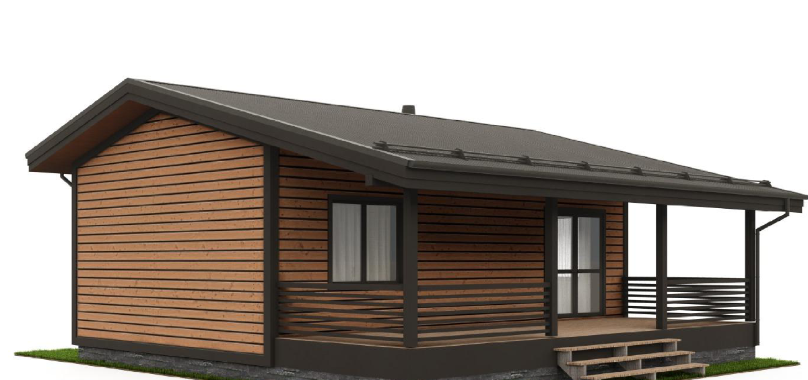
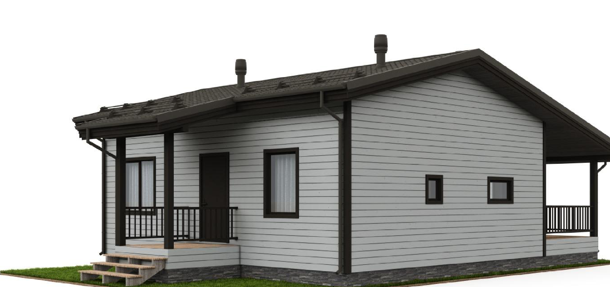

Статьи о каркасных домах
Честно о ценах, технологиях и ипотеке — чтобы вы выбирали дом с открытыми глазами.

Как выбрать участок под дом в Перми: что проверить до покупки
Охранные зоны, отступы, ВРИ и границы — почему без кадастрового инженера участок покупать нельзя.

Плюсы и минусы каркасного дома для постоянного проживания
Честный разбор от строителей: скорость, цена, тепло — и минусы, которые решаются заранее.

Проект каркасного дома: зачем он нужен и почему проект за 5 000 ₽ обходится дороже
Надёжность, материалы без перерасхода, ошибки планировки и чек-лист хорошего проекта.

Модульный или каркасный дом: в чём разница и что выбрать
Контроль сборки узлов, ограничение высоты при перевозке, уклон и утепление крыши — что проверить у модульного дома.
Газоблок или каркас: какой дом выбрать в Перми
Срок службы по ГОСТ, теплозащита с расчётом по нормам для Перми, фундамент, сроки и пожарная безопасность — честное сравнение.

Доска естественной влажности для каркасного дома: почему нельзя и что говорят СП
Цитаты из СП 31-105-2002 и СП 64.13330.2017, что происходит с сырой доской в стене и как проверить доску на стройке.
Сколько стоит каркасный дом под ключ в Перми в 2026 году
Почему «от 11 000 ₽/м²» — это коробка, что должно входить в цену под ключ и сколько реально стоит дом 75–90 м².